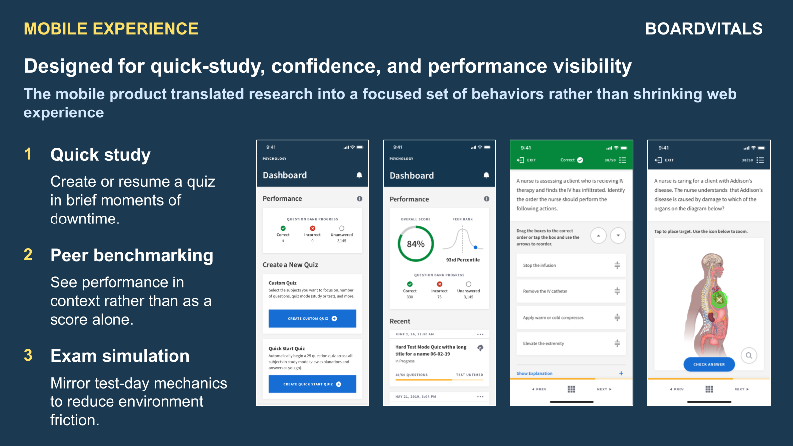
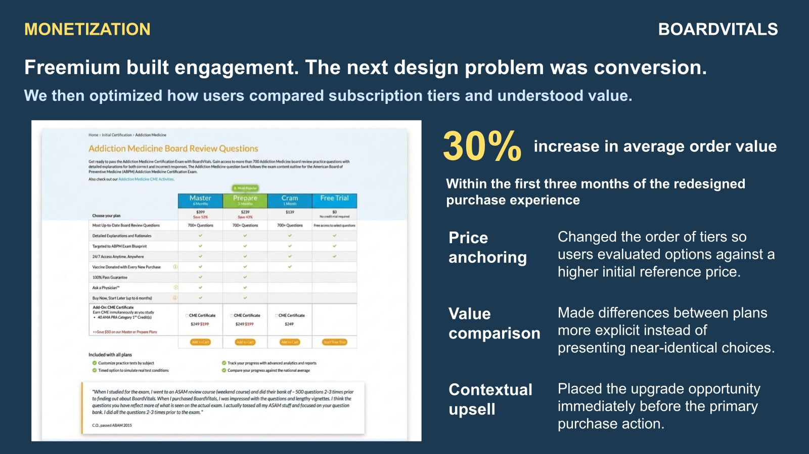

Personalized learning
BoardVitals' one-size-fits-all web experience didn't serve its distinct user groups. I led the strategic shift to persona-driven mobile journeys with freemium, then optimized subscription tier comparison — driving a 30% increase in average order value within three months.

Research changed the product from one-size-fits-all to tailored journeys. Different user groups had different motivations, time constraints, and willingness to pay. Attending physicians were time-sensitive and wanted the exact CME credits needed for annual licensing, without extra work. Residents and students lacked time and needed challenging questions in short study windows with clear peer-performance feedback. Nurses and students were price-conscious and wanted focused exam prep at a lower price point than the full premium library.
The strategic shift was to move from a single responsive web experience to persona-driven mobile journeys, with freemium used where access and price were the biggest barriers.
The mobile product translated research into a focused set of behaviors rather than shrinking the web experience. It was designed for quick-study, confidence, and performance visibility. Users could create or resume a quiz in brief moments of downtime, see performance in context through peer benchmarking rather than as a score alone, and mirror test-day mechanics through exam simulation to reduce environment friction.
Freemium built engagement. The next design problem was conversion. We optimized how users compared subscription tiers and understood value, driving a 30% increase in average order value within the first three months of the redesigned purchase experience.
We used price anchoring — changing the order of tiers so users evaluated options against a higher initial reference price. We made value comparison more explicit by surfacing differences between plans instead of presenting near-identical choices. And we placed the contextual upsell opportunity immediately before the primary purchase action.
